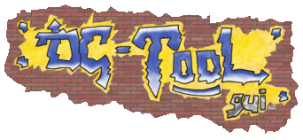

Bienvenue
dans DC-TOOL GUI !
2003-2004 ©réé par [big_fury]SiZiOUS
Bienvenue dans l'aide de DC-TOOL GUI !
DC-TOOL GUI est une interface graphique pour le programme DC-TOOL, de Andrew Kieschnick. C'est un programme permettant la communication de la Dreamcast avec un PC standard Windows.
Grâce à ce programme, vous pouvez télécharger des zones mémoires de la Dreamcast, envoyer des programmes afin de les tester, debugger des applications et bien d'autre encore.
Veuillez sélectionner un chapitre dans l'arbre de gauche.
[big_fury]SiZiOUS
Aide v2.0